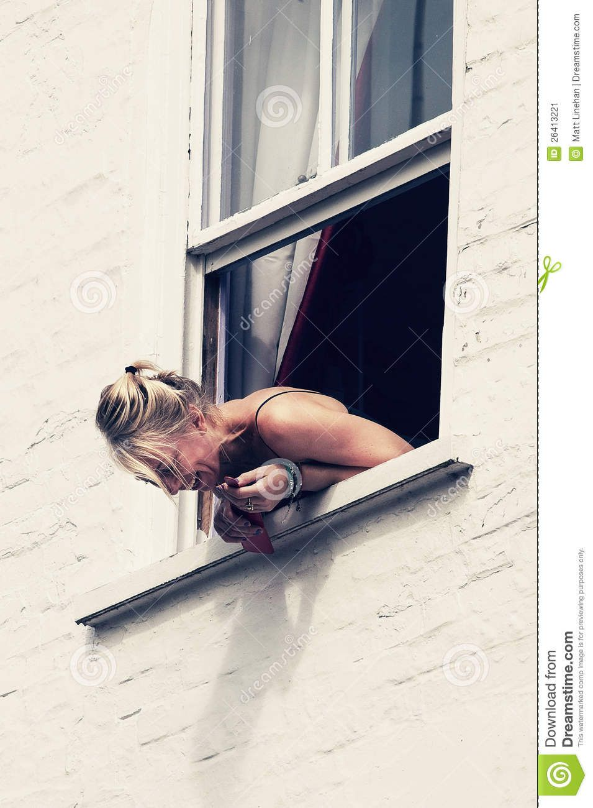
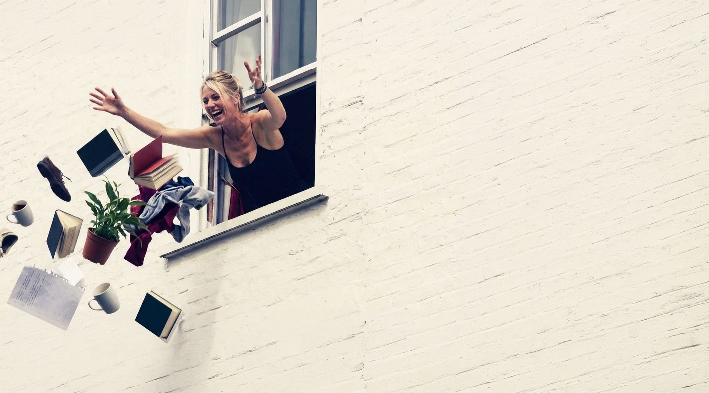
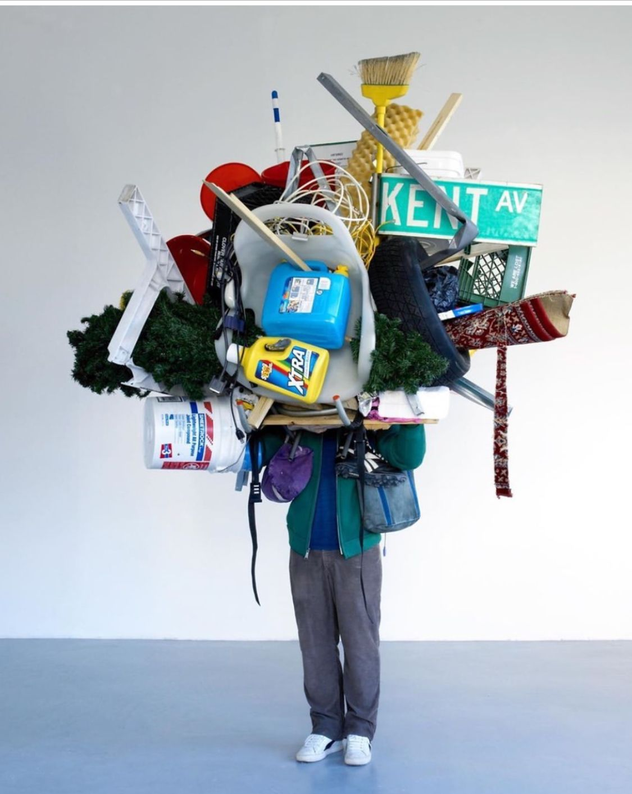
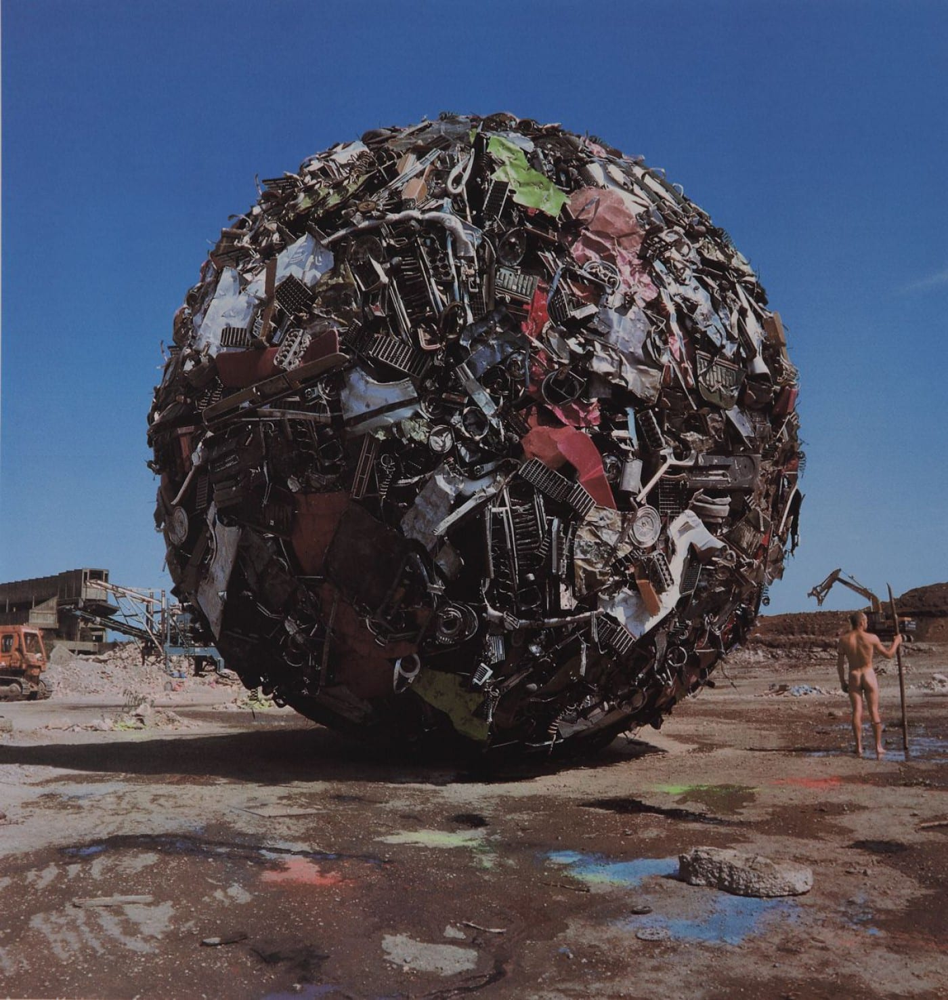

MUTAR
Immersive Collab Experience

How many things do you keep
without knowing why?

What if letting go was the beginning
of something new?

Clutter becomes art.
MUTAR turns personal clutter into public, collaborative art.
- ◆ Real objects, digitally scanned
- ◆ Collective VR creation
- ◆ Physically built in your city

Accumulation as a
contemporary burden.
"We live surrounded by objects we no longer use. We keep them not because they serve a purpose, but because letting go is difficult."
"MUTAR reflects our behavior back to us — revealing the fragile line between usefulness and excess."
"What was once private clutter becomes shared material. Variety becomes beauty."
What is MUTAR?
A multiplayer VR experience with passthrough, presented as live events in museums across cities.
Participants donate real objects, scan them, and collaboratively build digital artworks — the winning piece is physically constructed and installed in the city.
"A collective transformation from virtual to real."
How the mutation happens
Let Go
Choose what no longer serves you. Scanning becomes an act of release.
Share
Your object stops being yours. It enters a common library.
Craft & Play
Build together without ownership. Multiplayer VR sessions with playful, absurd tools.
Choose
The community decides what exists. Open voting through web/app.
Build
What was virtual becomes physical. Installed in a museum or public space.
Technology as beacon
- ◆ Passthrough keeps users grounded in physical space
- ◆ VR enables impossible combinations and scale
- ◆ Nothing remains purely digital
"From real to virtual, and back to real again."
Building community
through letting go
Organized from neighborhood to city to country. A temporal pipeline where each phase invites participation, creation, and collective voting.
Every city mutates differently
Culture, colors, and language shape each creation.
The final piece, installed in public space.
MUTAR is not about recycling objects.
It is about recycling our relationship with them.
Letting go, not as loss,
but as a collective creative act.